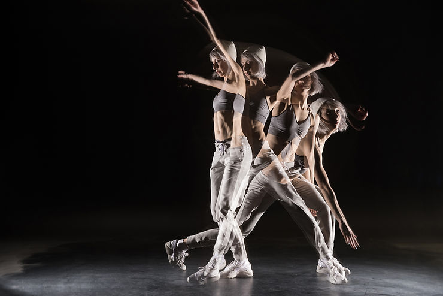

Compreendendo o movimento: fenomenologia, neurociências e cognição, é o tema do curso promovido pela ABRAPESP, no próximo sábado dia 27 de março, das 8 às 11 horas, ministrado pelos professores doutores Duarte Araújo, da Universidade de Lisboa, e Thabata Telles, Pesquisadora (pós-doc) da Universidade de São Paulo (EEFERP) e atual presidente da ABRAPESP. Entrevistamos os dois.
Como você apresenta o curso do próximo sábado?
Prof. Duarte – Será um curso da psicologia do esporte que olha para o corpo.
Queremos mostrar que o resultado depende de como a mente e o corpo funcionam com o que está à nossa volta. Entender que tudo tem a ver. e que temos corpos diferentes, portanto devemos olhar para eles de maneira diferente.
A Psicologia Social recai em como nós entendemos o outro e não em como interagimos com o outro, segundo suas características. E na Educação Física precisamos ir além das questões musculares.
Temos que olhar, não só para pressão psicológica, mas também para o corpo e ver como ele se movimenta. Estudar o corpo e o contexto faz diferença. Afinal, uma simulação do mundo é mais pobre que o próprio mundo.
E o que veremos, de novo, no curso?
Profa. Thabata – Colocar o movimento num campo interdisciplinar, juntando perspectivas, que normalmente são vistas, como quase opostas, é inédito! Para o profissional, a abordagem que vamos apresentar, pode parecer uma heresia, já que na sua formação o tema não foi assim tratado. Para o estudante, não só de psicologia, abre um horizonte de possibilidades, porque ele não vê, ainda, na universidade essa discussão.
O que é compreender o movimento?
Profa. Thabata – Na psicologia tendemos a “psicologizar”, a interpretar… enquanto na educação física nosso olhar é biomecânico. Eu que trabalho muito com a fenomenologia, uma linha da filosofia, que descreve o gesto como ele acontece fundamentalmente. E a grande sacada é não ficar só na perspectiva mais descritiva, mas cruzar com o que há de mais recente nas ciências cognitivas e neurociências.
Eu e o professor Duarte, nos complementamos. Eu venho da fenomenologia, com abertura cognição e neurociências; e ele é da educação física, focado na cognição e neurociências, com abertura para fenomenologia.
Como está este assunto no Brasil e no mundo?
Profa. Thabata – O Professor Duarte tem, em Portugal, um laboratório que trabalha com o tema. Na França já existe também desenvolvimento, assim como na Alemanha, Estados Unidos e no Canadá. No Brasil também, mas não é tão comum.
A aplicação nos atividades esportivas de alto-rendimento parece óbvia, mas e nas outras atividades físicas?
Profa. Thabata – Se estou com sede, eu pego um copo d’água, não penso antes, mas o meu corpo sabe o que trabalhar. Muitas das tomadas de decisão, no esporte, são feitas a partir desse domínio pré-reflexivo, porque não dá tempo de pensar.
Refletimos quando estamos aprendendo. Quando estamos começando uma modalidade, tenho que compreender onde coloco o pé, o braço… Depois entramos mais nesse registro pré-reflexivo. Temos que parar de olhar o corpo como se fosse um robô. E se podemos alimentar uma atividade física, que já acontece, por que inserir algo que não faz parte da vida daquela pessoa?
O tema é fascinante. Já se inscreveu? Acesse: nosso site
Thabata Castelo Branco Telles é pesquisadora (pós-doc) na Universidade de São Paulo (EEFERP), atuando em colaboração entre Brasil (USP), França (Université de Paris) e
Portugal (IESF). Doutora em Psicologia (FFCLRP-USP/FAPESP). Pesquisadora em Filosofia
(Fenomenologia) nos Arquivos Husserl – Paris (ENS-CNRS/FAPESP) de 2016 a 2018. Possui graduação em Psicologia (UNIFOR/CNPq) e Mestrado em Psicologia (UNIFOR/FUNCAP). É especialista em Psicologia do Esporte pelo CFP (Conselho Federal de Psicologia), membro do GT de Psicologia do Esporte da ANPEPP e atual presidente da ABRAPESP (Associação Brasileira de Psicologia do Esporte) – gestão 2020-2021. Atua e pesquisa com ênfase em fenomenologia; psicologia do esporte & do exercício; embodiment; percepção-ação; artes marciais & esportes de combate.
Duarte Araújo é professor Associado com Agregação da Faculdade de Motricidade Humana da Universidade de Lisboa. Presidente do Departamento de Desporto e Saúde da Faculdade de Motricidade Humana da Universidade de Lisboa e Coordenador do CIPER (Centro Interdisciplinar para o estudo da Performance Humana) – Unidade de Investigação & Desenvolvimento financiada pela Fundação para a Ciência e Tecnologia de Portugal. Diretor do Laboratório de Perícia no Desporto da FMH. Foi durante oito anos Presidente da Sociedade Portuguesa de Psicologia do Desporto, período durante o qual foi Membro do Conselho Nacional do Desporto, presidido pelo Secretário de Estado do Desporto e Juventude do Governo de Portugal. Publicou 15 livros, mais de 150 artigos científicos (mais de 5500 citações na Web of Science), e orientou 15 teses de doutoramento sobre perícia e psicologia do desporto, tomada de decisão, e análise da performance. Além de pertencer ao Editorial Board de diversas revistas de psicologia do desporto e ciências do desporto internacionais, é Editor Associado das revistas Psychology of Sport and Exercise, Frontiers in Psychology- section Movement Sience and Sport Psychology; e Journal of Expertise. Formador de treinadores de todos os níveis, há mais de 20 anos, em cooperação com diversas Federações e organizações desportivas.